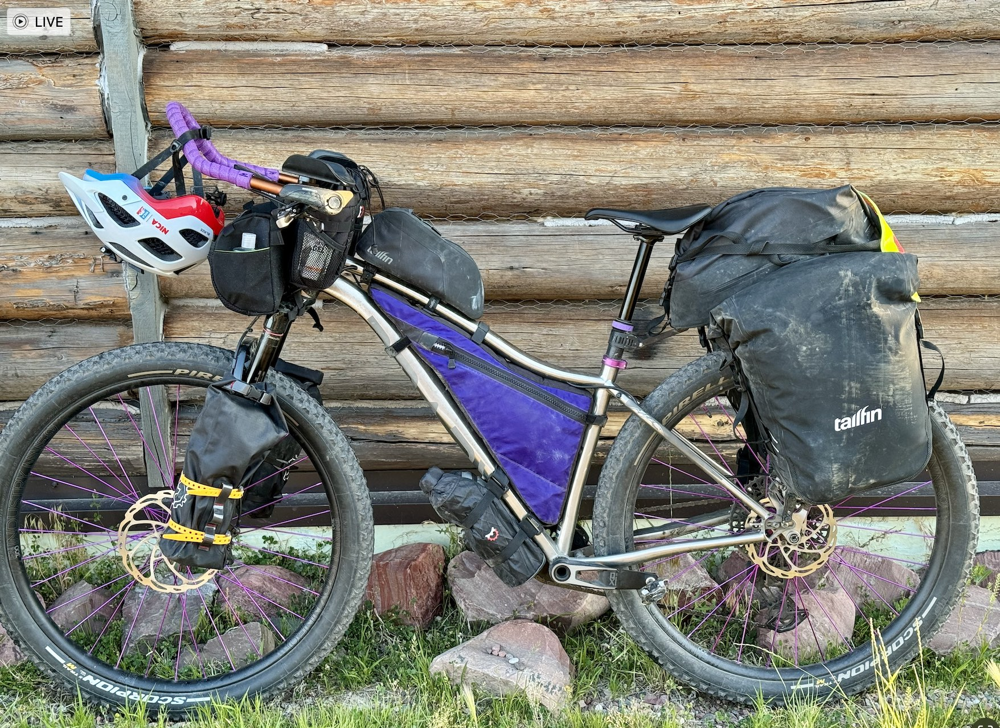

# For data manipulation and tidying
library(dplyr)
library(lubridate)
library(tidyr)
# For mapping
library(ggmap)
library(mapproj)
# For data visualizations
library(ggplot2)
# For modeling and machine learning
library(caret)Partial Replication of Bicycle Sharing in Seattle
Abstract
This is a replication of select portions of Amber Thomas’s original post Bicycle Sharing in Seattle from November 10, 2016.

Introduction
This is an exploration of bicycle-sharing data in the city of Seattle, WA (USA) from October 2014 - April 2015 not the data Amber used that was October 2014 - August 2016. I hope to eventually combine this data with other forms of ride-sharing and transportation in the city, but this will be the first step.
Time to get started!
Loading Necessary Packages
Importing Data
All of the data can be downloaded from Kaggle. This project contains 3 data sets and each file is imported and inspected independently using the read.csv() function.
Warning
The data from Kaggle is not the same data that was originally analyzed by Amber. Specifically, the number of rows in the trip dataset downloaded from Kaggle is 50,793 compared to the 236,065 rows Amber analyzes. The Pronto web site for Seattle is no longer available.
station <- read.csv(file = "./data/station.csv",
header = TRUE,
stringsAsFactors = FALSE)
trip <- read.csv(file = "./data/trip.csv",
header = TRUE,
stringsAsFactors = FALSE)
weather <- read.csv(file = "./data/weather.csv",
header = TRUE,
stringsAsFactors = FALSE)Ok, let’s take a look at each of these data files.
Data Structures and Variables
station
Rows: 58
Columns: 9
$ station_id <chr> "BT-01", "BT-03", "BT-04", "BT-05", "CBD-03", "CBD-0…
$ name <chr> "3rd Ave & Broad St", "2nd Ave & Vine St", "6th Ave …
$ lat <dbl> 47.61842, 47.61583, 47.61609, 47.61311, 47.61073, 47…
$ long <dbl> -122.3510, -122.3486, -122.3411, -122.3442, -122.332…
$ install_date <chr> "10/13/2014", "10/13/2014", "10/13/2014", "10/13/201…
$ install_dockcount <int> 18, 16, 16, 14, 20, 18, 20, 20, 20, 18, 16, 16, 18, …
$ modification_date <chr> "", "", "", "", "", "", "", "11/9/2015", "", "", "8/…
$ current_dockcount <int> 18, 16, 16, 14, 20, 18, 20, 18, 20, 18, 0, 16, 20, 1…
$ decommission_date <chr> "", "", "", "", "", "", "", "", "", "", "8/9/2016", …There are 9 variables in the data station data frame:
station_id: The individual ID number for a bike stationname: The name of that station ID, also appears to be the rough location of the stationlat: The latitude of the stationlong: The longitude of the stationinstall_date: Date that station was placed in service (MM/DD/YYYY format)install_dockcount: Number of docks (bike positions) at each station on the installation datemodification_date: Date that station was modified, resulting in a change in location or dock count (MM/DD/YYYY format)current_dockcount: Number of docks at each station on 8/31/2016decommission_date: Date that station was placed out of service (MM/DD/YYYY format)